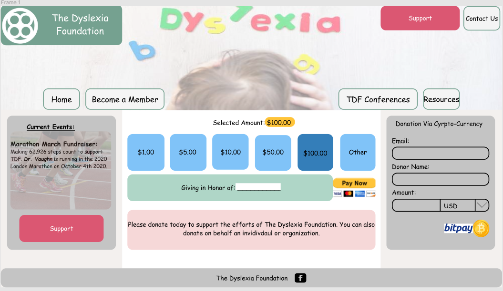

This a redesign concept for The Dyslexia Foundation donation page. I was reading an article about how comic sans makes words
easier to read for people with dyslexia. Given this, I decided to create a page that would be centered around this idea. Going
to the original page, it is very basic and does not give a clear and direct scope. This was the first webpage I designed and this
concept was for my own knowledge, to gain an understanding of design and experience through Figma. There was study of people with
dyslexia and their performance, many of the subjects chose mucky green and brown as a good combination along with blue and yellow as another.
The original page does display these aspects some, however I wanted there to be a more vibrant image associated buttons to help with
the process. With this, I also took the three-section webpage and condensed it into one. This has its pros and cons, with easy accessibility
but limited space for extra information. I will link the official page below and reiterate that this has no affiliation with The Dyslexia Foundation.
The Dyslexia Foundation
